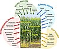

stress-period

Definition: Plant stress measurement is the quantification of environmental effects on plant health. When plants are subjected to less than ideal growing conditions, they are considered to be under stress. Stress factors can affect growth, survival and crop yields. Plant stress research looks at the response of plants to limitations and excesses of the main abiotic factors (light, temperature, water and nutrients), and of other stress factors that are important in particular situations (e.g. pests, pathogens, or pollutants). Plant stress measurement usually focuses on taking measurements from living plants. It can involve visual assessments of plant vitality, however, more recently the focus has moved to the use of instruments and protocols that reveal the response of particular processes within the plant (especially, photosynthesis, plant cell signalling and plant secondary metabolism)
Source: Wikipedia
Wikipedia Page (Something wrong with this association? Let us know.)
Wikidata Page (Something wrong with this association? Let us know.)
Occurs in: